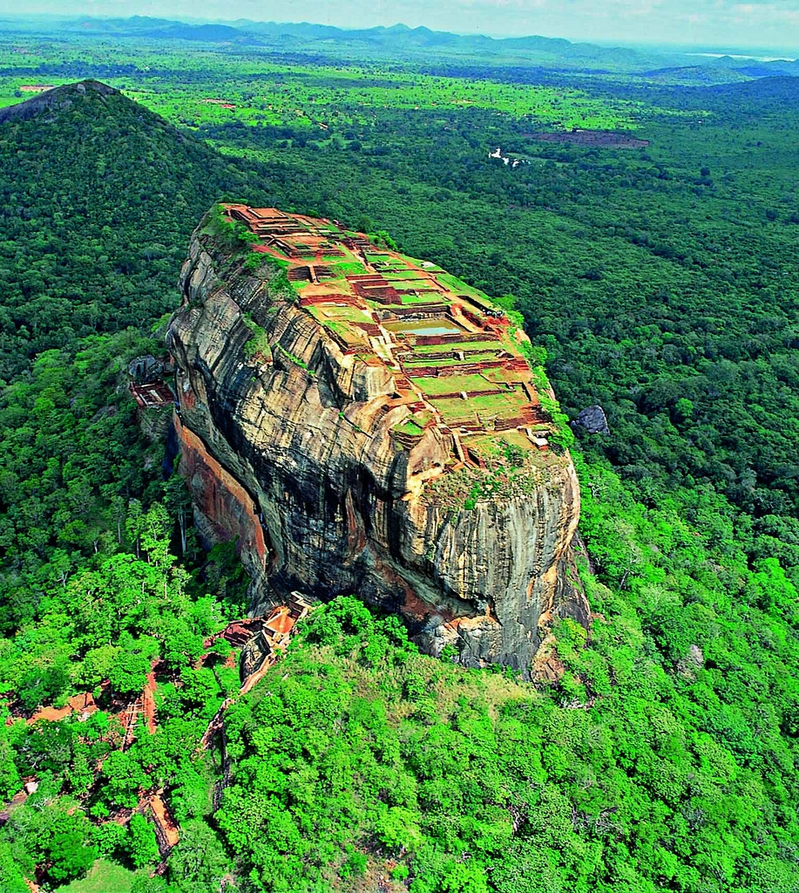

The ancient city of Sigiriya

Sigiriya is one of Sri Lanka’s most popular tourist attractions – and with good reason. This ruined, fifth century city has some extraordinary features, including moat and wall fortifications, elaborately landscaped gardens, and a monastery. But it is the two-hundred metre high granite rock that stands out from these ruins that is undoubtedly the star attraction, with its exquisite frescoes and the remains of a royal palace on the summit.

Sigiriya, also called Lion Rock or Lion Mountain, site in central Sri Lanka consisting of the ruins of an ancient stronghold that was built in the late 5th century CE on a remarkable monolithic rock pillar. The rock, which is so steep that its top overhangs the sides, rises to an elevation of 1,144 feet (349 metres) above sea level and is some 600 feet (180 metres) above the surrounding plain. The Sinhalese king Kashyapa I (reigned 477–495) built a palace in the shape of a monumental lion on the several acres of ground at the summit, intending it to be a safeguard against his enemies. However, the king was defeated in 495, and the palace fell into ruin. The site soon became a pilgrimage destination, however, and it is now a popular tourist spot. Visitors begin the final ascent to the top through the open paws of the lion, one of the few remaining portions of the palace that are still intact. Also notable are 21 rock paintings of apsaras (celestial singers and dancers). Sigiriya was designated a UNESCO World Heritage site in 1982.
